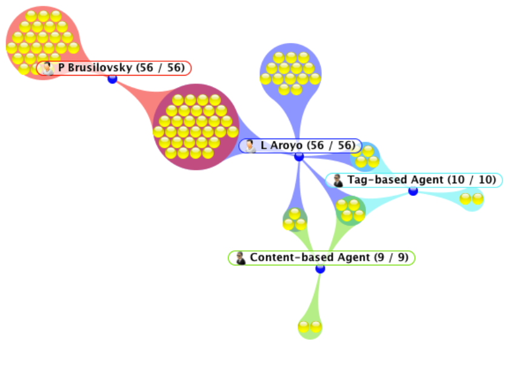
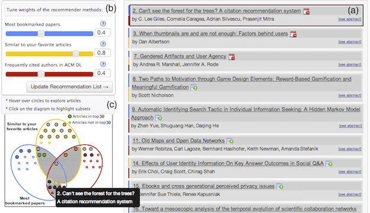
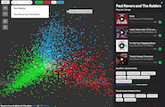

Denis Parra
dparra[at]ing[dot]puc[dot]clDepartamento Ciencia de la Computación
Vicuña Mackenna 4860, Macul
Santiago, Chile
zip code 7820436
Curso RecSys 2019 (PUC) 
Curso InfoVis 2019 (PUC)
SocVis Lab
Publications (via  )
)
Google Scholar Page
Software: pyReclab
Talks' Slides (via Slideshare)
Twitter Page
Resume(CV)
Old Web Site
Hi! I am Denis, Associate Professor at the Department of Computer Science, in the School of Engineering at PUC Chile. I am also adjunct researcher at the Millennium Institute for Research on Fundamentals of Data.
My research interests are Recommender Systems, Intelligent User Interfaces, and Information Visualization and I am currently leading the SocVis Research Lab.
If you are interested on these topics and want to work under my supervision as Master or PhD student, send me an e-mail to dparra[at]ing[dot]puc[dot]cl.
Selected Projects
|  |  |  |
| TalkExplorer [conf][journal][demo] | SetFusion [conf][journal][video] [slides] [demo] | Moodplay [conf] [video][demo] |
| A Survey on Interactive Recommender Systems | ||
| *for pre-prints of these articles, check my publications page | ||
News
August 2019 I have been officially promoted to Associate Professor at PUC Chile!]
March 2019 I am attending the 24th ACM IUI conference in Los Angeles, CA, USA. We are presenting the paper "The Effect of Explanations and Algorithmic Accuracy on Visual Recommender Systems of Artistic Images," where we conduct a user study in order to measure and synthesize the impact of several aspects (algorithm, type of explanation, user expertise) upon different dimensions of the UX with an art recommender systems (perception of relevance, trust, understandability, etc.) [paper]
January 2019 Three of my master students successfully defended their theses: Mar\'ia Fernanda Sep\'ulveda, Vicente Dominguez and Pablo Messina. Kudos for them! Another student, Jorge Schellman, is defending in 2 days, hopefully he does well too.
October 2018 I attended the ACM RecSys 2018 conference in Vancouver, Canada. We presented 2 papers in co-located workshops, one at RecSysKTL by del Río et al. "Do Better ImageNet Models Transfer Better … for Image Recommendation?"[paper][slides], and another one at the IntRS workshop by Dominguez et al. "Towards Explanations for Visual Recommender Systems of Artistic Images" [paper]
...older newsLatest Publications
An Interactive Relevance Feedback Interface for Evidence-Based Health Care. Donoso-Guzman, I.; and Parra, D. In Proceedings of the 23rd Conference on Intelligent User interfaces, 2018. [paper pdf]Learning to Leverage Microblog Information for QA Retrieval. Herrera, J.; Poblete, B.; and Parra, D. In Proceedings of the European Conference in Information Retrieval, 2018. [paper pdf]
CNVis: A Web-Based Visual Analytics Tool for Exploring Conference Navigator Data. Bailey, S. M.; Wei, J. A.; Wang, C.; Parra, D.; and Brusilovsky, P. In IS&T Electronic Imaging 2018 Symposium , 2018. [paper pdf]
Students
PhD
MSc
Alumni
Teaching
Graduate
- Second Semester 2018: Recommender Systems
- Second Semester 2017: Recommender Systems
- Second Semester 2016: Recommender Systems
- Second Semester 2015: Recommender Systems.
- First Semester 2015: Data Mining (MPGI Master Program )
- Second Semester 2014: Recommender Systems (CS Master Program). The page for this class is here
- First Semester 2014: Data Mining (MPGI Master Program )
Undergraduate
- Second Semester 2018: Information Visualization.
- First Semester 2018: Introduction to the Major in Computer Science.
- Second Semester 2017: Information Visualization.
- First Semester 2017: Introduction to the Major in Computer Science.
- First & Second Semester 2016: Introduction to the Major in Computer Science.
- First & Second Semester 2015: Introduction to the Major in Computer Science.
- First & Second Semester 2014: Introduction to the Major in Computer Science.
Academic Service
Workshop Organization
- ESIDA 2018 (co-located at IUI 2018)
- LSRS 2017 (co-located at RecSys 2017)
- International Workshop on Social Personalization and Search (co-located at SIGIR 2015)
- International Workshop on Social Personalization (co-located at HT 2014)
Journal Reviews
- International Journal of Human-Computer Studies
- ACM TiiS (distinguished reviewer)
- Interacting with Computers, Oxford University Press
- Computer Communications, Elsevier
- Social Network Analysis and Mining, Springer
- Knowledge-Based Systems, Elsevier
Conference Reviews
- 2018: WWW, RecSys, UMAP, IUI
- 2017: WWW, RecSys, IUI
- WWW 2016 (Web Science Track)
- ACM Conference in Intelligent User Interfaces (IUI) 2016
- ACM RecSys 2015 (Posters and Demos)
- CIKM 2015
- I-KNOW 2015
- RDSM 2015 Workshop, collocated at WWW 2015
- MSM 2015 Workshop, collocated at WWW 2015
- VISLA 2015 Workshop, collocated at LAK 2015
- Web Science Track at WWW 2015
- ACM CHI 2015
- I-KNOW 2014
- Web Science Track at WWW 2014
- SocialCom 2014
- ACM Hypertext 2014
- LiUD 2014 Workshop, collocated at UMAP 2014
- MSM 2014 Workshop, collocated at WWW 2014
- I-KNOW 2013
- Springer Volume on RecSys for TEL, 2013
- EDM 2012
- CARS 2012 Workshop (co-located with Recsys 2012)
- RecSys, 2010
- Web Intelligence Conference, 2011
- Web Intelligence Conference, 2009